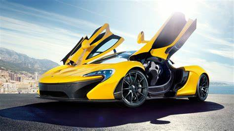
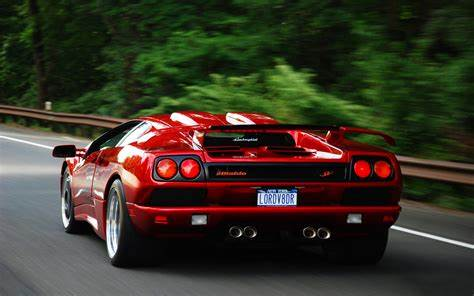
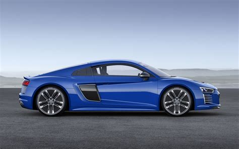

| Sno |
picture |
link |
discription |
| 1 |
 |
click on link |
A car or automobile is a motor vehicle with wheels. Most definitions of cars say that they run primarily on roads, seat one to eight people, have four wheels, and mainly transport people (rather than goods). |
| 2 |
 |
click on link |
A car or automobile is a motor vehicle with wheels. Most definitions of cars say that they run primarily on roads, seat one to eight people, have four wheels, and mainly transport people (rather than goods). |
| 3 |
|
click on link |
A car or automobile is a motor vehicle with wheels. Most definitions of cars say that they run primarily on roads, seat one to eight people, have four wheels, and mainly transport people (rather than goods). |
| 4 |
 |
click on link |
A car or automobile is a motor vehicle with wheels. Most definitions of cars say that they run primarily on roads, seat one to eight people, have four wheels, and mainly transport people (rather than goods). |
| 5 |
 |
click on link |
A car or automobile is a motor vehicle with wheels. Most definitions of cars say that they run primarily on roads, seat one to eight people, have four wheels, and mainly transport people (rather than goods). |
| Magazzini Alimentari Riuniti |
Giovanni Rovelli |
Italy |
Germany |